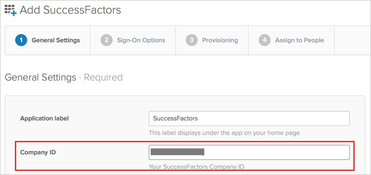
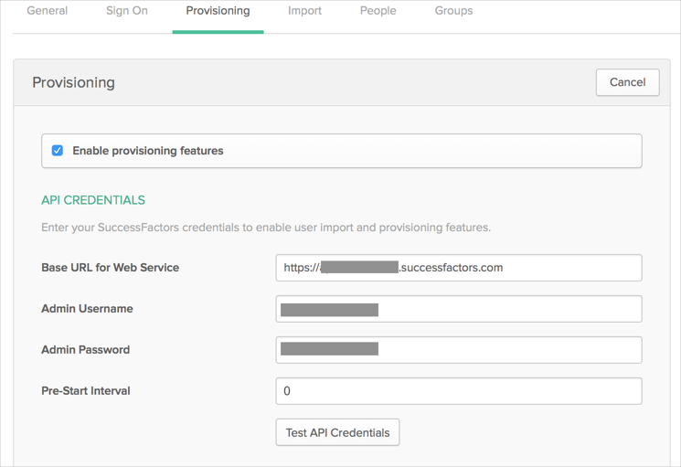
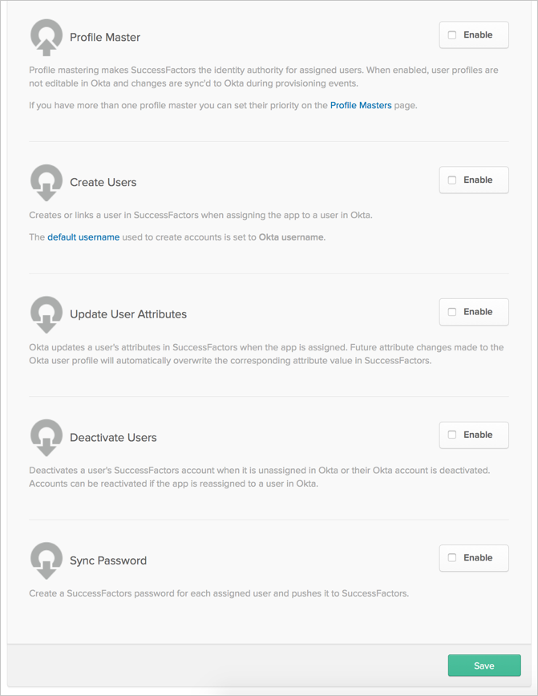
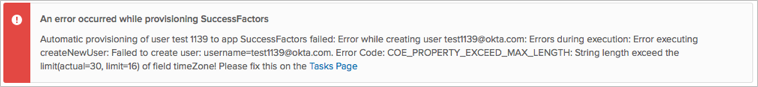
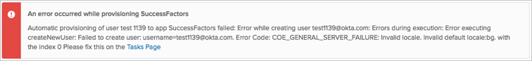
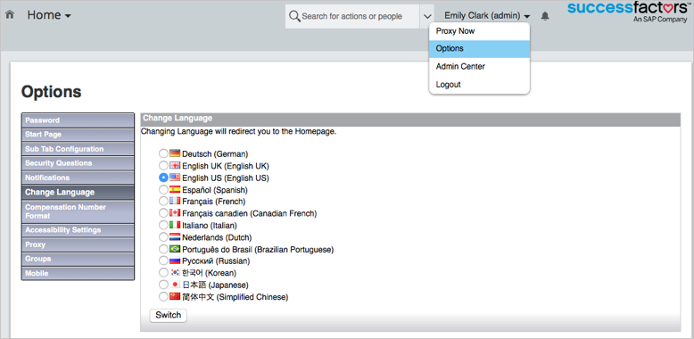

This guide provides the steps required to configure Provisioning for SuccessFactors.
The following provisioning features are supported:
Import New Users
New users created in the third party application will be downloaded and turned in to new AppUser objects, for matching against existing OKTA users.
Import Profile Updates
Import User Schema
Push New Users
New users created through OKTA will also be created in the third party application.
Push Password Updates
Updates made to the user's password through OKTA will be pushed to the third party application.
Push Profile Updates
Updates made to the user's profile through OKTA will be pushed to the third party application.
Push User Deactivation
Deactivating the user or disabling the user's access to the application through OKTA will deactivate the user in the third party application.
Reactivate Users
Reactivating the user through Okta will reactivate the user in the 3rd party application.
Profile Master
Before you configure provisioning for SuccessFactors, make sure you have configured your Company ID parameter under the General Settings tab for the SuccessFactors app.
You can obtain this value from your login URL:
https://acme.successfactors.com/login?company=ACME123456789
Where ACME123456789 = Company ID.

Configure your Sign-On Options on the next tab, then click Next to take you back to the Provisioning tab
Configure your Provisioning settings for SuccessFactors as follows:
Check the Enable provisioning features box.
Enter your SuccessFactors API Credentials:
Base URL for Web Service: This is your API base URL. This can differ from your login URL. You can find a list of API URLs here.
Admin Username: Enter a username for your administrator account.
Admin Password: Enter a password for your administrator account (above).
Pre-Start Interval: The number of days before the start date an employee should be considered active.

Scroll down and enable the Provisioning Features you want to use for this app.

Click Save.
You can now assign people to the app, if needed.
The provided manager or HR user ID isn't present in SuccessFactors:

To fix: Provide a current user ID or create the user in your SuccessFactors account.
Timezone length value exceed configured limit:

To fix: Modify your SFSF data model to allow TZ values with a greater length or select another value.
Default Locale value isn't allowed in current SuccessFactors account:

To fix: Select the one from allowed list, as shown here:
